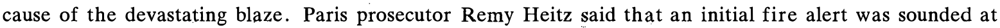
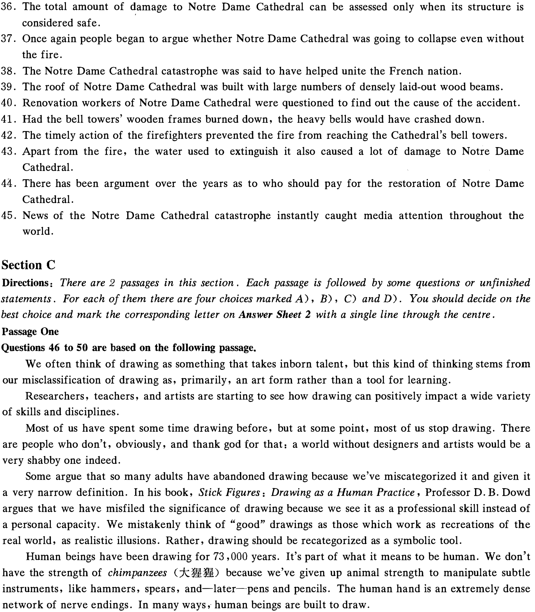
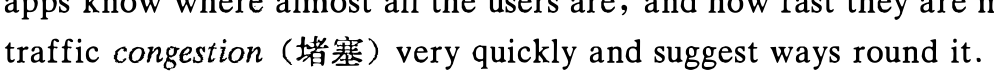
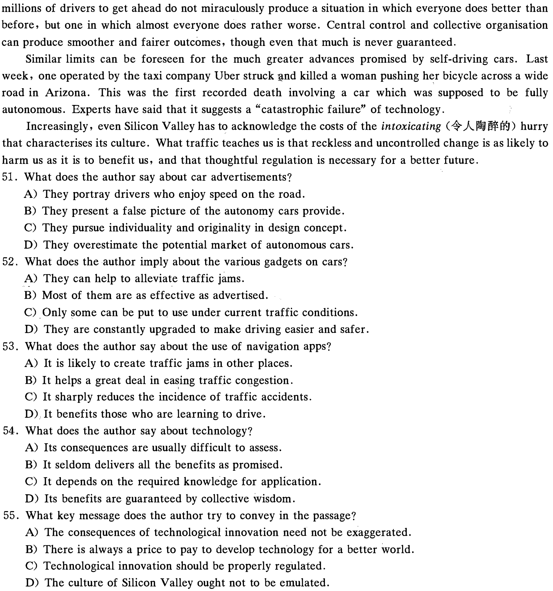

本页部分文字层异常，已保留原图文字区域；这些区域随窗口缩放，暂不能重新换行或复制。
Part I Writing (30 minutes)
Directions: For this part, you are allowed 30 minutes to write an essay based on the chart below. You should start your essay with a brief description of the chart and comment on China's achievements in higher education. You should write at least 150 words but no more than 200 words.
Gross enrolment ratio in higher education in China (1990 - 2019)

Part ][ Listening Comprehension (30 minutes)
Section A
Directions: In this section, you will hear two long conversations. At the end of each conversation, you will hear four questions. Both the conversation and the_ questions will be spoken only once. After you hear a question , you must choose the best answer from the four choices marked A) , B) , C) and D). Then mark the corresponding letter on Answer Sheet 1 with a single line through the centre.
Questions 1 to 4 are based on the conversation you have just heard.
3.
4.
Questions 5 to 8 are based on the conversation you have just heard.
5.
6.
7 .
8.
Section B
Directions: In this section , you will hear two passages. At the end of each passage , you will hear three or four questions. Both the passage and the questions will be spoken only once. After you hear a question , you must choose the best answer from the four choices marked A ) , B) , C) and D ) . Then mark the corresponding letter on Answer Sheet 1 with a single line through the centre .
Questions 9 to 11 are based on the passage you have just heard.
9.
10.
11.
Questions 12 to 15 are based on the passage you have just heard.
12.
13.
14.
15.
Section C
Directions: In this section, you will hear three recordings of lectures or talks followed by three or four questions. The recordings will be played only once. After you hear a question, you must choose the best answer from the four choices marked A), B), C) and D). Then mark the corresponding letter on Answer Sheet 1 with a single line through the centre.
Questions 16 to 18 are based on the recording you have just heard.
16.
17.
18.
Questions 19 to 21 are based on the recording you have just heard.
19.
20.
21.
Questions 22 to 25 are based on the recording you have just heard.
22.
23.
24.
25.
Part ][ Reading Comprehension ( 40 minutes)
Section A
Directions: In this section, there is a passage with ten blanks. You are required to select one word for each blank from a list of choices given in a word bank following the passage. Read the passage through carefully before making your choices. Each choice in the bank is identified by a letter. Please mark the corresponding letter for each item on Answer Sheet 2 with a single line through the centre. You may not use any of the words in the bank more than once.
I'm always baffled when I walk into a pharmacy and see shelves bursting with various vitamins, extracts and other supplements, all promising to accelerate or promote weight loss. Aisles of marketing genius belie (掩饰) the fact that, 26 , weight loss is dictated by the laws of arithmetic. Economist Jessica Irvine wrote a book about how she used math to help her lose more than 18 kilograms. If calories taken in are less than calories 27 , weight shall be lost, and so it is with money.
Despite the 28 of financial products, services and solutions geared towards accumulating wealth, if all begins with the same 29 : getting ahead financially requires a reduction of spending, so that income is greater than expenses. I was reminded of this again recently listening to an interview with Nicole Haddow, the author of Smashed Avocado, explaining how she cracked the property market at 31. It was quite a 30 , given where she had been two years earlier.
Nicole didn't celebrate her 30th birthday as she had 31 . She was sobbing at the dinner table with her parents, with whom she had just moved back in. She had no stable income, $12,000 in credit-card debt and no plan, but to her 32 , her father, an accountant, told her that her financial 33 wasn't
本页部分文字层异常，已保留原图文字区域；这些区域随窗口缩放，暂不能重新换行或复制。
as bad as she thought. He said, on her income, with some changes, she would be able to buy an investment unit within two years, which she did.
Nicole admitted she was fortunate, as she was able to live with her parents and 34 her spending and life-to get herself on track financially. Creating a gap between her income and spending required a
35 financial independence.
Section B
Directions: In this section, you are going to read a passage with ter,, statements attached to it. Each statement contains information given in one of the paragraphs. Identify the paragraph from which the information is derived. You may choose a paragraph more than once. Each paragraph is marked with a letter. Answer the questions by marking the corresponding letter on Answer Sheet 2.
France's beloved cathedral only minutes away from complete destruction
A) Notre Dame Cathedral in the heart of Paris was within "15 to 30 minutes" of complete destruction as firefighters battled to stop flames reaching its bell towers on Monday evening, French authorities have revealed. A greater disaster was averted by members of the Paris fire brigade, who risked their lives to remain inside the burning monument to create a wall of water between the raging fire and the two towers on the west of the building.
B) The revelation of how close. France came to losing its most famous cathedral emerged as pQlice investigators questioned workers involved in the restoration of the monument to try to estfl.blish the

6:20 pm on Monday evening but no fire was found. The second alert was sounded at 6:43 pm, and the blaze was discovered on the roof.
C) More than € 650 million was raised in a few hours on Tuesday as French business leaders and global corporations announced they would donate to a restoration campaign launched by the president, Emmanuel Macron. But as the. emergency services picked through the burnt debris, a row was resurfacing over accusations that the beloved cathedral, immortalised in Victor Hugo's novel, was already crumbling before the fire.
D) The cathedral is owned by the French state and has been at the centre of a years-long dispute over who should finance restoration work of the collapsing staircases, crumbling statues and cracked walls. JeanMichel Leniaud, the president of the scientific council at the N_a tional Heritage Institute, said: "What happened was bound to happen . .The lack of adequate maintenance and daily attention to such a majestic building is the cause of this catastrophe." After the blaze was declared completely extinguished, 15 hours after it started, the junior interior minister, Laurent Nunez, said the structure had been saved but remained vulnerable. He praised the actions of the firefighters but admitted the fate of the cathedral had been uncertain. "They saved the main structure, but it all came down to 15- 30 minutes," Nunez said.
E) In a surprise televised address on Tuesday evening, Macron said he wanted to see the cathedral rebuilt within five years. "The fire at Notre Dame reminds us that we will always have challenges to overcome," Macron said, "Notre Dame is our history, our literature, the centre of our life. It is the standard by which we measure our distances. It's so many books, so many paintings. It's the cathedral of every French person, even those who have never visited it. This history is ours and so we will rebuild Notre Dame. It is what the French people expect; it is what our history deserves. It is our deep destiny. We will rebuild Notre Dame so it is even more beautiful than before. I want it done in the next five years. We can do it. After the time of testing comes a time of reflection and then of action."
本页部分文字层异常，已保留原图文字区域；这些区域随窗口缩放，暂不能重新换行或复制。
F) The fire, which had started at the base of the 93-metre spire at about 6: 40 pm on Monday, spread through the cathedral's roof, made up of hundreds of oak beams, some dating back to the 13th century. These beams, known as la foret (the forest) because of their density, formed the cross shaped roof that ran the length of the central part of the cathedral. As hundreds of tourists and Parisians stood and watched the flames leaping from the roof, there was shock and tears as the cathedral spire caught fire, burned and then collapsed into itself.
G) A collection of dramatic videos and photos quickly spread across social media, showing the horrifying destruction, and attracting emotional responses from people all over the world. Indeed, within minutes the fire occupied headlines of every major global newspaper and television network. This is not surprising given Notre Dame Cathedral, meaning "Our Lady", is one of the most recognised symbols of the city of Paris attracting millions of tourists every year.
H) While the world looked on, the 500 firefighters at the scene then battled to prevent the flames from reaching the two main towers, where the cathedral bells hang. If the wooden frame of the towers had caught fire, it could have sent the bells-the largest of which, the Emmanuel Bell, weighs 13 tons crashing down, potentially causing the collapse of both towers. Police and fire services will spend the next 48 hours assessing the "security and safety" of the 850-year-old ·structure. Nunez said: "We have identified vulnerabilities throughout the structure, all of which still need securing." As a result, residents of five buildings around the northern side of the cathedral were being temporarily evacuated, he added. Architects have identified three main holes in the structure, in the locations of the spire, the main hall and the upper rooms to the north of the central aisle. Most of the wooden roof beams have been burned, and parts of the concrete holding up the roof have collapsed.
I) The interior minister, Christophe Castaner, visited the cathedral on Tuesday afternoon to see the extent of the devastation. Ash covered the marble diamond-patterned floor and floated in large pools of grey water from the fire hoses. Behind a heap of blackened oak beams that lay piled up where they had fallen, daylight from vast holes in the cathedral roof lit a golden cross over a statue by Nicolas Coustou, which appeared to have escaped- damage. Preliminary inspections also suggested -the three ornate stained glass "rose" windows appeared to have survived the fire, officials said. However, fire officers have said a complete inventory of the damage will not be possible until the cathedral structure has been deemed safe.
J) The culture minister, Franck Riester, said religious relics saved from the cathedral were being securely held at the Hotel de Ville, and works of art that sustained smoke damage were being taken to the Louvre, the world's largest art museum, where they would be dried out, repaired and stored. Sixteen copper statues that decorated the spire had been removed for restoration only a few days before the fire. Relics at the top of the spire are believed lost as the spire was destroyed. As well as damage from the heat, which firefighters said reached more than 800 ·c , experts also need to assess damage from the vast quantities of water firefighters poured into the cathedral. One casualty of this was The Great Organ constructed in the 1730s, which was said to have escaped the flames but been significantly damaged by water.
K) French political commentators noted the devastating fire had succeeded where Macron had failed in uniting the country. But criticism over the original state of the building is likely to intensify over coming days. Leniaud told La Croix newspaper: "This is not about looking for people to blame. The responsibility is collective because this is the most loved monument in the country." Alexandre Gady, an art historian, agreed. "We've been saying for years that the budget for maintaining historic
本页部分文字层异常，已保留原图文字区域；这些区域随窗口缩放，暂不能重新换行或复制。
monuments is too low," Gady said. The Paris prosecutor's office has opened an inquiry into
"involuntary destruction by fire", indicating they believe the cause of the blaze was accidental rather than criminal.

36. The total amount of damage to Notre Dame Cathedral can be assessed only when its structure is considered safe.
37. Once again people began to argue whether Notre Dame Cathedral was going to collapse even without the fire.
38. The Notre Dame Cathedral catastrophe was said to have helped unite the French nation.
39. The roof of Notre Dame Cathedral was built with large numbers of densely laid-out wood beams.
40. Renovation workers of Notre Dame Cathedral were questioned to find out the cause of the accident.
41. Had the bell towers' wooden frames burned down, the heavy bells would have crashed down.
42. The timely action of the firefighters prevented the fire from reaching the Cathedral's bell towers.
43. Apart from the fire, the water used to extinguish it also caused a lot of damage to Notre Dame Cathedral.
44. There has been argument over the years as to who should pay for the restoration of Notre Dame Cathedral.
45. News of the Notre Dame Cathedral catastrophe instantly caught media attention throughout the world.
Some researchers argue that doodling (涂画) activates the brain's so-called default circuit-essentially, the areas of the brain responsible for maintaining a baseline level of activity in the absence of other stimuli. Because of this, some believe that doodling during a boring lecture can help students pay attention. In one study, participants were asked to listen to a list of names while either doodling or sitting still. Those who doodled remembered 29 percent more of the names than those who did not. There's also evidence that drawing talent is based on how accurately someone perceives the world. The human visual system tends to misjudge size, shape, color, and angles but artists perceive these
本页部分文字层异常，已保留原图文字区域；这些区域随窗口缩放，暂不能重新换行或复制。
qualities more accurately than non-artists. Cultivating drawing talent can become an essential tool to improve people's observational skills in fields where the visual is important.
Rather than ·think of drawing as a talent that some creative people are gifted in, we should consider it as a tool for seeing and understanding the world better-one that just so happens to double as an art form. Both absent-minded doodling and copying from life have been shown to positively affect your memory and visual perception, so complain loudly the next time your school board slashes the art department's budget.
46. What do people generally think about drawing?
47. What do we learn about designers and artists?
48. What does Professor D. B. Dowd argue in his book?
49. What have some researchers found from one study about doodling?
50. What is characteristic of people with drawing talent?
Passage Two
Questions 51 to SS are based on the following passage.
The car has reshaped our cities. It seems to offer autonomy for everyone. There is something almost delightful in the detachment from reality of advertisements showing mass-produced cars marketed as symbols of individuality and of freedom when most of their lives will be spent making short journeys on choked roads.
For all the fuss made about top speeds, cornering ability and acceleration, the most useful gadgets on a modern car are those which work when you're going very slowly: parking sensors, sound systems, and navigation apps which will show a way around upcoming traffic jams. This seems to be one of the few areas where the benefit of sharing personal information comes straight back to the sharer: because these apps know where almost all the users are, and how fast they are moving almost all the time, they can spot

The problem comes when everyone is using a navigation app which tells them to avoid everyone else using the same gadget. Traffic jams often appear where no one has enough information to avoid them. When a lucky few have access to the knowledge, they will benefit greatly. But when everyone has perfect information, traffic jams simply spread onto the side roads that seem to offer a way round them.
This new congestion teaches us two things. The first is that the promises of technology will never be realised as fully as we hope; they will be limited by their unforeseen and unintended consequ,ences. Sitting in a more comfortable car in a different traffic jam is pleasant but hardly the liberation that once seemed to be promised. The second is that self-organisation will not get us where we want to go. The efforts of
本页部分文字层异常，已保留原图文字区域；这些区域随窗口缩放，暂不能重新换行或复制。

51. What does the author say about car advertisements?
52. What does the author imply about the various gadgets on cars?
53. What does the author say about the use of navigation apps?
54. What does the author say about technology?
55. What key message does the author try to convey in the passage?
Part N Translation ( 30 minutes)
Directions: For this part, you are allowed 30 minutes to translate a passage from Chinese into English. You should write your answer on Answer Sheet 2.
青海是中国西北部的一个省份,平均海拔3000米以上,大部分地区为高山和高原。青海省得名于全国最大的咸水湖青海湖。青海湖被誉为“中国最美的湖泊”,是最受欢迎的旅游景点之一,也是摄影师和艺术家的天堂。 青海山川壮丽,地大物博,石油和天然气储量丰富,省内许多城市的经济在石油和天然气工业带动下得到了长足发展。青海尤以水资源丰富而闻名,是中国三大河流长江,黄河和澜沧江的发源地,在中国的水生态中发挥着重要作用。